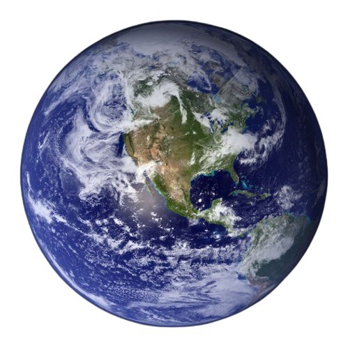
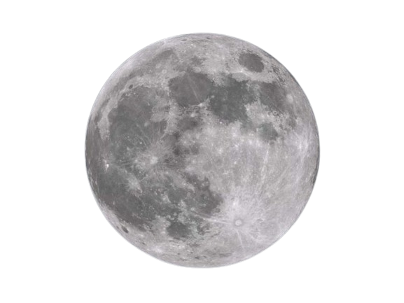

Earth is the third planet from the Sun and the only astronomical object known to harbor life. This is enabled by Earth being a water world, the only one in the Solar System sustaining liquid surface water. Almost all of Earth's water is contained in its global ocean, covering 70.8% of Earth's crust. The remaining 29.2% of Earth's crust is land, most of which is located in the form of continental landmasses within Earth's land hemisphere. Most of Earth's land is somewhat humid and covered by vegetation, while large sheets of ice at Earth's polar deserts retain more water than Earth's groundwater, lakes, rivers and atmospheric water combined. Earth's crust consists of slowly moving tectonic plates, which interact to produce mountain ranges, volcanoes, and earthquakes. Earth has a liquid outer core that generates a magnetosphere capable of deflecting most of the destructive solar winds and cosmic radiation. Earth has a dynamic atmosphere, which sustains Earth's surface conditions and protects it from most meteoroids and UV-light at entry. It has a composition of primarily nitrogen and oxygen. Water vapor is widely present in the atmosphere, forming clouds that cover most of the planet.
Most of Earth's land is somewhat humid and covered by vegetation, while large sheets of ice at Earth's polar deserts retain more water than Earth's groundwater, lakes, rivers and atmospheric water combined. Earth's crust consists of slowly moving tectonic plates, which interact to produce mountain ranges, volcanoes, and earthquakes. Earth has a liquid outer core that generates a magnetosphere capable of deflecting most of the destructive solar winds and cosmic radiation. Earth's expected long-term future is tied to that of the Sun. Over the next 1.1 billion years, solar luminosity will increase by 10%, and over the next 3.5 billion years by 40%. Earth's increasing surface temperature will accelerate the inorganic carbon cycle, reducing CO2 concentration to levels lethally low for plants (10 ppm for C4 photosynthesis) in approximately 100–900 million years. The lack of vegetation will result in the loss of oxygen in the atmosphere, making animal life impossible. Due to the increased luminosity, Earth's mean temperature may reach 100 °C (212 °F) in 1.5 billion years, and all ocean water will evaporate and be lost to space, which may trigger a runaway greenhouse effect, within an estimated 1.6 to 3 billion years. Even if the Sun were stable, a fraction of the water in the modern oceans will descend to the mantle, due to reduced steam venting from mid-ocean ridges. Earth's rotation period relative to the Sun—its mean solar day—is 86,400 seconds of mean solar time (86,400.0025 SI seconds). Because Earth's solar day is now slightly longer than it was during the 19th century due to tidal deceleration, each day varies between 0 and 2 ms longer than the mean solar day. Earth's rotation period relative to the fixed stars, called its stellar day by the International Earth Rotation and Reference Systems Service (IERS), is 86,164.0989 seconds of mean solar time (UT1), or 23h 56m 4.0989[ Earth's rotation period relative to the precessing or moving mean March equinox (when the Sun is at 90° on the equator), is 86,164.0905 seconds of mean solar time (UT1) (23h 56m 4.0905s ) Thus the sidereal day is shorter than the stellar day by about 8.4 ms. Apart from meteors within the atmosphere and low-orbiting satellites, the main apparent motion of celestial bodies in Earth's sky is to the west at a rate of 15°/h = 15'/min. For bodies near the celestial equator, this is equivalent to an apparent diameter of the Sun or the Moon every two minutes; from Earth's surface, the apparent sizes of the Sun and the Moon are approximately the same.
Earth has a dynamic atmosphere, which sustains Earth's surface conditions and protects it from most meteoroids and UV-light at entry. It has a composition of primarily nitrogen and oxygen. Water vapor is widely present in the atmosphere, forming clouds that cover most of the planet. The water vapor acts as a greenhouse gas and, together with other greenhouse gases in the atmosphere, particularly carbon dioxide (CO2), creates the conditions for both liquid surface water and water vapor to persist via the capturing of energy from the Sun's light. This process maintains the current average surface temperature of 14.76 °C, at which water is liquid under atmospheric pressure. Differences in the amount of captured energy between geographic regions (as with the equatorial region receiving more sunlight than the polar regions) drive atmospheric and ocean currents, producing a global climate system with different climate regions, and a range of weather phenomena such as precipitation, allowing components such as nitrogen to cycle. Earth is rounded into an ellipsoid with a circumference of about 40,000 km. It is the densest planet in the Solar System. Of the four rocky planets, it is the largest and most massive. Earth is about eight light-minutes away from the Sun and orbits it, taking a year (about 365.25 days) to complete one revolution. Earth rotates around its own axis in slightly less than a day (in about 23 hours and 56 minutes). Earth's axis of rotation is tilted with respect to the perpendicular to its orbital plane around the Sun, producing seasons. Earth is orbited by one permanent natural satellite, the Moon, which orbits Earth at 384,400 km (1.28 light seconds) and is roughly a quarter as wide as Earth. The Moon's gravity helps stabilize Earth's axis, causes tides and gradually slows Earth's rotation. Tidal locking has made the Moon always face Earth with the same side.
120 Seen
2 Days Ago
45 Seen
3 Days Ago
246 Seen
A Month Ago
23 Seen
4 Days Ago
67 Seen
6 Days Ago